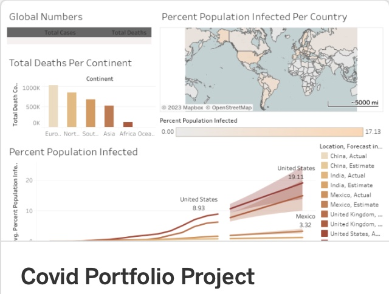
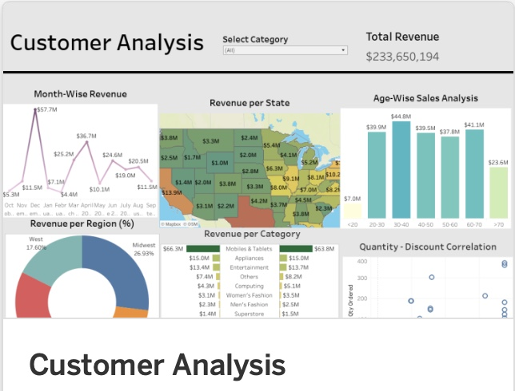

SQL Data
Exploration
In this project we explore early COVID 19 data using SQL Server.
Data Analyst skilled in SQL, Tableau, and Python @Yasminp324
In this project we explore early COVID 19 data using SQL Server.

COVID-19 Tableau project offers a comprehensive dashboard that provides insights into various aspects of the COVID-19 pandemic. The project utilizes data visualization to track and analyze COVID-19 cases, testing, vaccination rates, and other relevant metrics. Its goal is to facilitate data-driven decision-making, monitor the impact of the pandemic, and aid in understanding and responding to COVID-19 trends effectively.

Customer Analysis Tableau project utilizes a revenue-focused analysis dashboard, enabling insights into customer revenue patterns based on demographics, purchase history, product categories, and regions. The project aims to optimize marketing strategies and enhance revenue generation within customer service operations.

This Tableau dashboard offers a holistic view of health metrics, focusing on heart disease frequency, racial disparities, age-specific BMI averages, gender-based heart disease prevalence, and comparisons of BMI and general health between individuals with and without heart disease. It provides a multidimensional analysis of crucial health indicators, empowering deeper understanding and insights into the interplay between heart disease, demographics, BMI, and overall health.

This SQL-based project manipulates health data to analyze heart disease prevalence and associated risk factors. It cleans and standardizes information, conducts comprehensive analyses on gender, age, race, and risk factors like sleep, health, smoking, and BMI. The project aims to unveil insights into demographic-specific trends and critical age intervals where heart disease rates rise, offering valuable insights into its prevalence and contributing factors.

The Python project explores relationships within the movie industry, identifying correlations between variables like revenues, budgets, genres, and release dates. Its objective is to uncover factors influencing box office success, inform decision-making, and reveal valuable trends within the dataset.